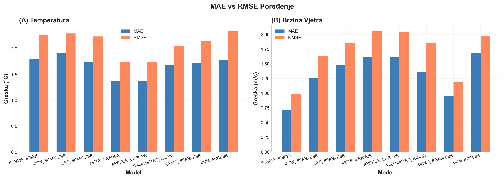
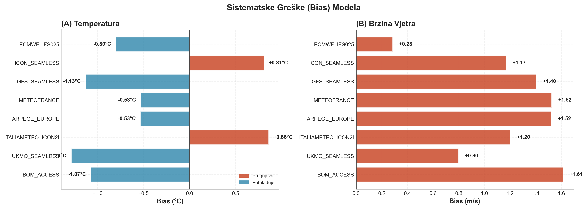
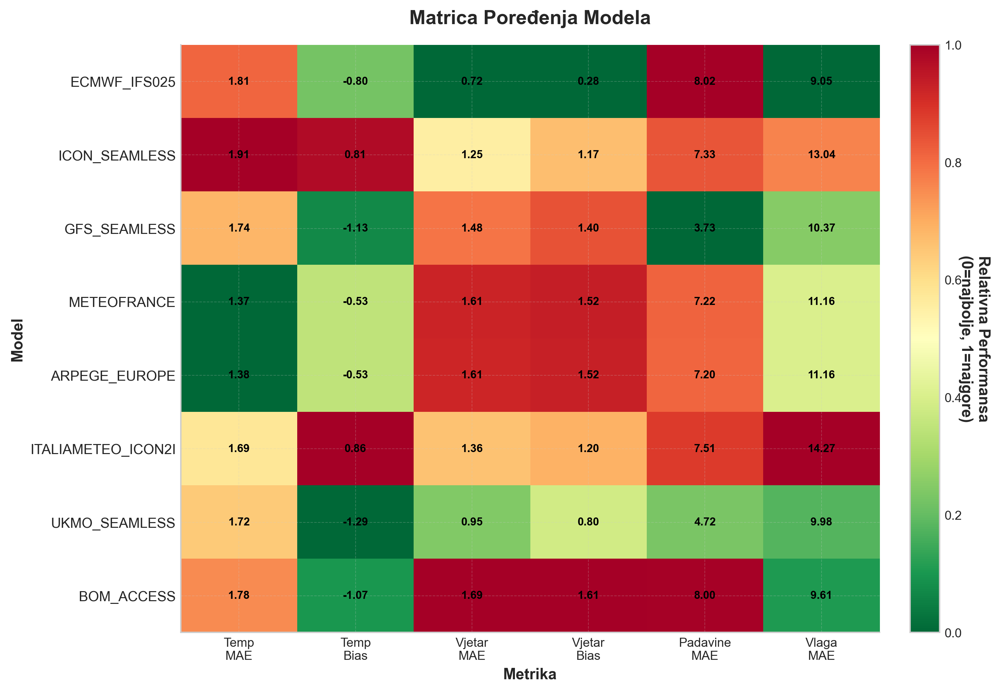
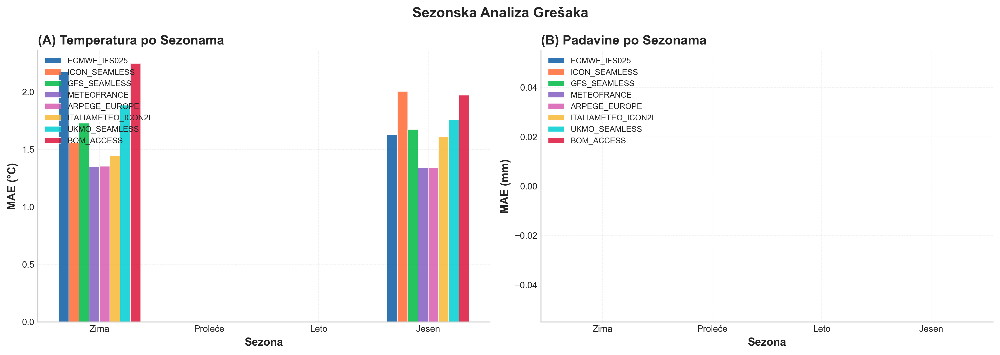
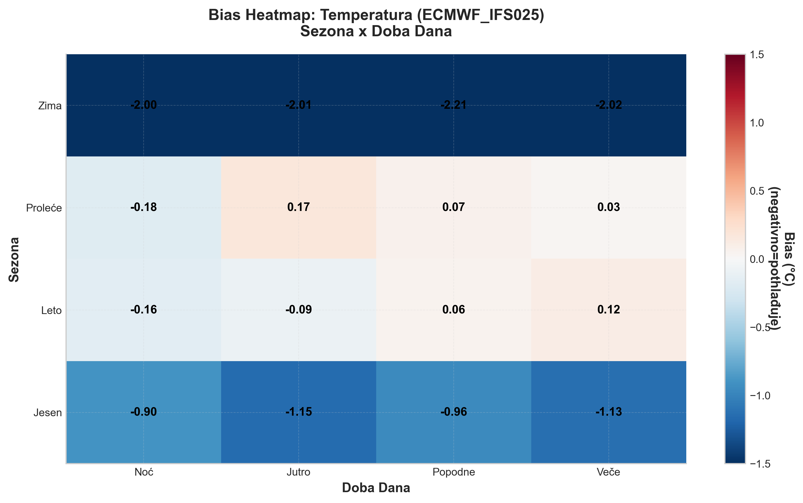
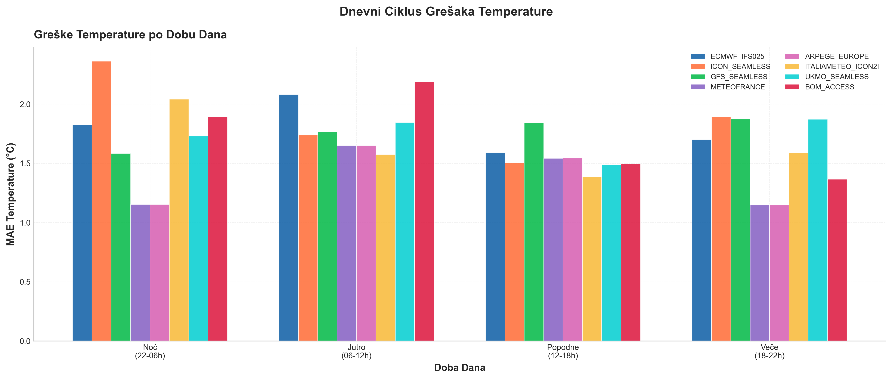
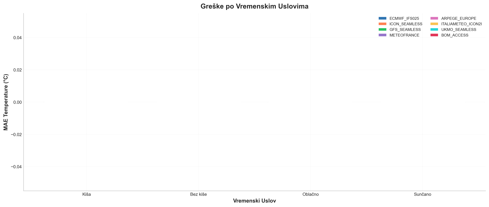
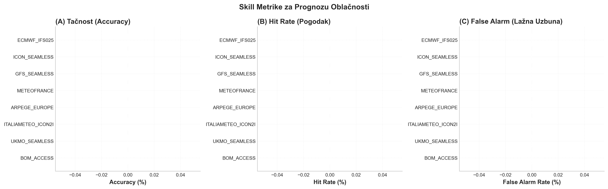
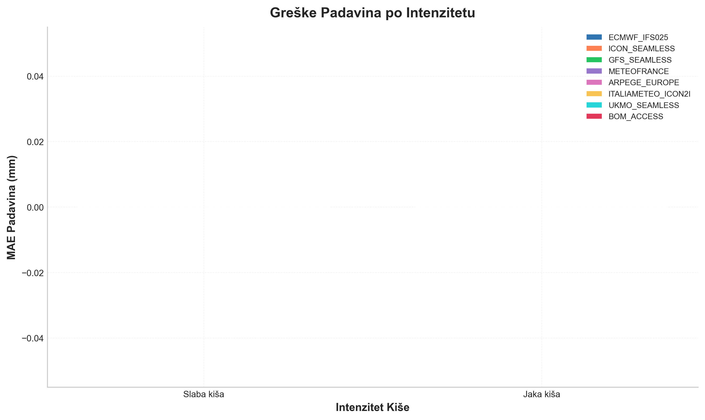
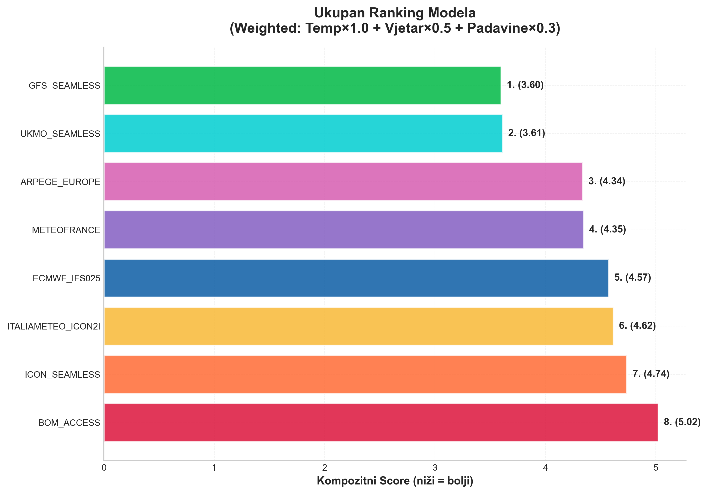

Februar 2026 (ažurirano)
Globalni i kontinentalni meteorološki modeli — ECMWF, GFS, ICON, Météo-France, UKMO, BOM — simuliraju kompletnu atmosferu i daju prognoze za cijelu planetu (ili samo Evropu). Nevjerovatno su sofisticirani, ali nijedan od njih nije optimizovan za jednu tačku na karti. Svaki pravi sistematske greške koje su specifične za lokalnu geografiju: blizinu mora, okolne planine, dominantne vjetrove.
Budva je savršen primjer. U ovom projektu sam uzeo 5+ godina satnih opservacija sa jedne privatne meteo stanice u Budvi (50.000+ mjerenja, od aprila 2020. do danas), uporedio ih sa prognozama 8 globalnih modela (svaki model ima različit period dostupnosti — od 7.000 do 41.500 sati poređenja), i trenirao XGBoost model koji sistematski ispravlja njihove greške. Rezultat: temperatura tačnija za 30%, vjetar za 50%, pritisak za 54% — mjereno na podacima koje model nikad nije vidio.
Globalni meteorološki modeli kao što su ECMWF, GFS ili ICON pokrivaju cijelu planetu i izvrsno rade posao na velikom nivou. Međutim, lokalna geografija, blizina mora, i specifičnosti Budve stvaraju uslove koje globalni modeli ne mogu savršeno uhvatiti.
Uzeo sam 8 različitih globalnih modela (ECMWF IFS025, ICON Seamless, GFS Seamless, MeteoFrance, ARPEGE Europe, ItaliaMeteo ICON2I, UKMO i BOM) i uporedio njihove prognoze sa stvarnim mjerenjima. Realne podatke sam uzeo sa stanice ibudva5 — što mi je dalo preko 50.000 satnih opservacija. Svaki model ima različitu dostupnost u Open-Meteo Historical Forecast API-ju: GFS od marta 2021. (~41.500h), UKMO od marta 2022. (~33.700h), MeteoFrance/ARPEGE/ICON od novembra 2022. (~27.700h), ECMWF od februara 2024. (~17.300h), BOM januar 2024.–jul 2025. (~12.600h), ItaliaMeteo od aprila 2025. (~7.000h).
Najvažnija metrika koju koristim je Mean Absolute Error (MAE) — srednja apsolutna greška. MAE mjeri prosječnu veličinu grešaka u skupu prognoza, bez obzira na njihov smjer. Za svako satno mjerenje, uzimam razliku između prognozirane i stvarne vrijednosti, uzmem apsolutnu vrijednost te razlike, i na kraju prosjek svih tih apsolutnih razlika daje MAE:
Na primjer, ako model prognozira temperature od 20°C, 22°C i 18°C, a stvarne temperature su 19°C, 24°C i 17°C, onda su apsolutne greške 1°C, 2°C i 1°C, pa je MAE = (1+2+1)/3 = 1.33°C.
MAE je intuitivan jer se izražava u istim jedinicama kao i originalni podaci (stepeni Celzijusa za temperaturu, m/s za vjetar). Ako je MAE za temperaturu 1.5°C, to bukvalno znači da u prosjeku prognoza promašuje za 1.5 stepeni. Niska vrijednost MAE ukazuje na preciznije prognoze. Još jedna prednost MAE-a je da tretira sve greške linearno — greška od 5°C je tačno pet puta „gora" od greške od 1°C, što ga čini robusnim na pojedinačne ekstremne promašaje.
Druga veoma korisna metrika je Mean Squared Error (MSE) — srednja kvadratna greška. Za razliku od MAE koji uzima apsolutne vrijednosti, MSE kvadrira svaku pojedinačnu grešku prije prosjeka:
Kvadriranje ima važnu posljedicu: veće greške se kažnjavaju neproporcijalno više. Greška od 5°C doprinosi sa 25 jedinica, dok greška od 1°C doprinosi samo sa 1 jedinicom — dakle pet puta veća greška u apsolutnom smislu daje 25 puta veći doprinos u MSE. To znači da je MSE posebno osjetljiv na „velike promašaje" — ako model povremeno napravi veliku grešku, MSE će to snažno reflektovati, čak i ako je većina prognoza tačna.
Pošto MSE daje rezultat u kvadriranim jedinicama (°C²), često se koristi korijen iz MSE — Root Mean Squared Error (RMSE) — koji vraća metriku u originalne jedinice:
RMSE je uvijek veći ili jednak MAE. Razlika između RMSE i MAE govori o varijabilnosti grešaka: ako su RMSE i MAE slični, to znači da su greške uglavnom konstantne veličine. Ako je RMSE značajno veći od MAE, to ukazuje da postoje i neke velike greške pored manjih.
Takođe sam računao bias (sistematsku grešku):
Pozitivan bias znači da model pregrijava, negativan da pothlađuje. Za razliku od MAE i MSE, bias ne koristi apsolutne vrijednosti niti kvadrate — pozitivne i negativne greške se međusobno poništavaju. To čini bias korisnim za otkrivanje sistematskih tendencija: model sa bias-om od -0.9°C konzistentno predviđa nižu temperaturu od stvarne.
Analiza je potvrdila moje sumnje. Evo šta sam otkrio:
| Model | MAE Temp (°C) | Bias (°C) | n (sati) |
|---|---|---|---|
| MeteoFrance | 1.37 | -0.53 | 27,582 |
| ARPEGE Europe | 1.38 | -0.53 | 27,552 |
| ItaliaMeteo ICON2I | 1.69 | +0.86 | 6,876 |
| UKMO Seamless | 1.72 | -1.29 | 33,437 |
| GFS Seamless | 1.74 | -1.13 | 41,216 |
| BOM ACCESS | 1.78 | -1.07 | 12,532 |
| ECMWF IFS025 | 1.81 | -0.80 | 17,073 |
| ICON Seamless | 1.91 | +0.81 | 27,446 |
Tabela je sortirana po MAE za temperaturu (što niže to bolje). Modeli imaju različit broj validnih sati (n) jer Open-Meteo Historical Forecast API ima različite početne datume po modelu — od marta 2021. (GFS) do aprila 2025. (ItaliaMeteo). UKMO je 4. najbolji za temperaturu, a BOM ima najmanji dewpoint bias.
Temperatura nije jedina stvar koja se prognozira. Evo kako se modeli ponašaju na svim ključnim varijablama:
| Model | MAE | Bias | n |
|---|---|---|---|
| ECMWF IFS025 | 0.72 | +0.28 | 16,629 |
| UKMO Seamless | 0.95 | +0.80 | 32,795 |
| ICON Seamless | 1.25 | +1.17 | 26,802 |
| ItaliaMeteo ICON2I | 1.36 | +1.20 | 6,721 |
| GFS Seamless | 1.48 | +1.40 | 40,574 |
| ARPEGE Europe | 1.61 | +1.52 | 26,915 |
| MeteoFrance | 1.61 | +1.52 | 26,942 |
| BOM ACCESS | 1.69 | +1.61 | 12,187 |
Svi modeli precjenjuju vjetar (pozitivan bias). ECMWF je duplo bolji od ostalih.
| Model | MAE | Bias | n |
|---|---|---|---|
| ECMWF IFS025 | 9.05 | -1.59 | 16,465 |
| BOM ACCESS | 9.61 | +3.02 | 12,532 |
| UKMO Seamless | 9.98 | +3.50 | 33,432 |
| GFS Seamless | 10.37 | -1.76 | 41,216 |
| MeteoFrance | 11.16 | -1.79 | 27,582 |
| ARPEGE Europe | 11.16 | -1.78 | 27,552 |
| ICON Seamless | 13.04 | -9.27 | 27,446 |
| ItaliaMeteo ICON2I | 14.27 | -11.34 | 6,876 |
ICON i ItaliaMeteo drastično podcjenjuju vlažnost (bias -9 do -11%). ECMWF je najprecizniji.
| Model | MAE | Bias | n |
|---|---|---|---|
| GFS Seamless | 3.73 | -3.59 | 22,363 |
| UKMO Seamless | 4.72 | -4.34 | 14,582 |
| ARPEGE Europe | 7.20 | -6.86 | 8,719 |
| MeteoFrance | 7.22 | -6.88 | 8,735 |
| ICON Seamless | 7.33 | -6.87 | 8,592 |
| ItaliaMeteo ICON2I | 7.51 | -7.04 | 2,112 |
| BOM ACCESS | 8.00 | -6.83 | 2,893 |
| ECMWF IFS025 | 8.02 | -7.77 | 4,624 |
Svi modeli podcjenjuju padavine (negativan bias). GFS je dvostruko bolji od većine.
| Model | MAE | Bias | n |
|---|---|---|---|
| ItaliaMeteo ICON2I | 0.68 | +0.58 | 6,979 |
| BOM ACCESS | 1.00 | +0.87 | 12,593 |
| MeteoFrance | 1.09 | +1.08 | 27,791 |
| ARPEGE Europe | 1.09 | +1.08 | 27,761 |
| ICON Seamless | 1.14 | +1.13 | 27,626 |
| ECMWF IFS025 | 1.32 | +1.31 | 17,208 |
| UKMO Seamless | 1.87 | +1.85 | 33,643 |
| GFS Seamless | 2.75 | +2.73 | 41,426 |
Svi modeli precjenjuju pritisak. ItaliaMeteo (ICON-D2 na 2km!) je najbolji zahvaljujući visokoj rezoluciji.
Tačka rose: BOM ACCESS je najprecizniji (MAE 1.87°C), slijedi UKMO (1.92°C) i ECMWF (1.92°C).
Udari vjetra: GFS je neočekivano dominantan (MAE 1.78 m/s), dok ICON ima MAE od 5.54 m/s — trostruko gori.
Solarna radijacija: ItaliaMeteo je najbolji (MAE 42.4 W/m²). GFS i BOM su najlošiji (~65 W/m²).
Nekoliko stvari je očito. Prvo, većina modela ima negativan bias za temperaturu - što znači da sistematski pothlađuju Budvu za pola stepena ili više. Samo ICON ima pozitivan bias (pregrijava). Drugo, greške nisu uniforme tokom cijele godine. Zimi su veće nego ljeti.
 Posebno me je zanimala bura. Definisao sam je kao vjetar brzine preko 8 m/s iz smjera između 315° i 45°. Tokom bure, modeli imaju značajno veće greške nego inače.
Greške se značajno razlikuju po sezonama. Ljeti su najveće, što je vjerovatno zbog intenzivnijih konvektivnih procesa i lokalne cirkulacije zbog mora.
Heatmapa iznad prikazuje sistematski bias (pristrasnost) temperature za modele po sezonama. Crvena boja znači da model pregrijava, plava da pothlađuje. Većina modela pothlađuje — posebno UKMO i GFS, dok ICON i ItaliaMeteo pregrijavaju.
Tokom ekstremnih temperatura (hladnoća ispod 5. percentila ili vrućina iznad 95. percentila), greške modela se povećavaju — što je očekivano jer su to upravo situacije van tipičnog ponašanja.
Pored osnovnih metrika, analizirao sam i sposobnost modela da predviđaju oblačnost i padavine — dva parametra koja su tradicionalno teška za prognozu na lokalnom nivou.
 Radar grafik ispod prikazuje performanse svakog modela na svim analiziranim varijablama — temperatura, brzina vjetra, padavine, oblačnost — dajući kompletnu sliku prednosti i slabosti svakog modela.

Ideja je da treniram model mašinskog učenja (konkretno XGBoost) koji će naučiti iz grešaka koje globalni modeli prave. Model uzima sirove prognoze kao input i daje korigovanu prognozu kao output. Sada imam 11 modela — uključujući ECMWF IFS HRES na 9km, holandski KNMI HARMONIE AROME (5.5km) i danski DMI HARMONIE AROME (2km), uz ranijih 8 modela. Tri nova modela donose višu rezoluciju i potpuno novi model sistem (HARMONIE) koji nije zastupljen među ostalim modelima.
Ključno je kreirati dobre feature-e. Pored sirovih prognoza, dodajem:
Cilj je bio spustiti MAE ispod 1.0°C — postignut: 0.86°C. To je poboljšanje od 32.5% u odnosu na najbolji globalni model (ARPÈGE Europe). Sa integracijom Previous Runs revizija, Huber loss pristupom i proširenjem na 11 modela (uključujući ECMWF IFS 9km, KNMI i DMI HARMONIE), model koristi 1,300+ feature-a iz 11 modela + 5 godina opservacija.
XGBoost (eXtreme Gradient Boosting) je algoritam mašinskog učenja baziran na ansamblu stabala odlučivanja. Za razliku od klasičnog random foresta koji trenira stabla nezavisno, XGBoost ih gradi sekvencijalno — svako novo stablo pokušava ispraviti greške prethodnih.
Model se gradi iterativno. Konačna predikcija je suma predikcija svih stabala:
gdje je K broj stabala, fk je predikcija k-tog stabla, a F je prostor svih mogućih stabala odlučivanja (CART stabla).
U svakoj iteraciji t, dodajemo novo stablo ft koje minimizira grešku. Predikcija nakon t koraka:
gdje je η (eta) learning rate — hiperparametar koji kontroliše koliko jako svako novo stablo utiče na konačni rezultat. Manji η znači sporije učenje ali bolju generalizaciju.
XGBoost minimizira regularizovanu objektivnu funkciju:
Prvi dio je loss funkcija (u našem slučaju MAE), a drugi dio je regularizacija koja penalizuje kompleksnost stabala:
gdje je T broj listova u stablu, wj su težine (vrijednosti) u listovima, γ je penalizacija za broj listova, λ je L2 regularizacija, a α je L1 regularizacija. Ova regularizacija sprečava overfitting i razlikuje XGBoost od klasičnog gradient boostinga.
Ključna inovacija XGBoost-a je korištenje Taylor ekspanzije drugog reda za loss funkciju. U koraku t:
gdje su:
gi je prvi izvod (gradijent), a hi drugi izvod (hesijan) loss funkcije. Ovo je ono što daje "Gradient" u imenu — svako novo stablo se uklapa na gradijente grešaka prethodnih stabala.
Za dato stablo sa strukturom q, optimalna težina u svakom listu j je:
a odgovarajuća optimalna vrijednost loss funkcije:
gdje je Ij skup podataka koji pripada listu j.
Prilikom gradnje svakog stabla, XGBoost bira optimalni split evaluirajući gain za svako moguće dijeljenje:
Tri člana su: score lijevog djeteta + score desnog djeteta − score bez dijeljenja. Oduzimamo γ kao penalizaciju za dodavanje novog lista. Split se pravi samo ako je gain pozitivan.
Za korekciju vremenskih prognoza koristim sljedeće hiperparametre:
Hiperparametri su podešeni po grupi varijabli. Temperatura, tačka rose i pritisak koriste agresivniji ensemble (više stabala, sporije učenje), dok vjetar koristi brži setup. Padavine imaju poseban two-stage pipeline (klasifikator + regresor) sa jačom regularizacijom.
| Parametar | Temp / Rose / Pritisak | Oblačnost / Solar / Vlažnost | Vjetar | Značenje |
|---|---|---|---|---|
n_estimators | 1200 | 1000 | 800 | Maks. broj stabala (sa early stopping) |
max_depth | 6 | 6 | 6 | Maksimalna dubina svakog stabla |
learning_rate (η) | 0.03 | 0.04 | 0.05 | Koliko jako svako novo stablo utiče |
subsample | 0.8 | 0.8 | 0.8 | Procenat podataka korišten za svako stablo |
colsample_bytree | 0.7 | 0.65 | 0.7 | Procenat feature-a korišten za svako stablo |
reg_alpha (α) | 0.1 | 0.15–0.2 | 0.1 | L1 regularizacija (LASSO) |
reg_lambda (λ) | 1.0 | 1.5 | 1.0 | L2 regularizacija (Ridge) |
min_child_weight | 5 | 5 | 5 | Minimalni zbroj hesijana u listu |
gamma (γ) | 0.05 | 0.05 | 0.05 | Min. gain za novi split |
Kad treniraš XGBoost, moraš mu reći kako da mjeri svoje greške tokom učenja — to se zove loss funkcija. Dva standardna izbora su MSE i MAE, i svaki ima problem.
MSE kvadrira svaku grešku. Jedna velika greška od 15 stepeni doprinosi sa 225 u loss — više nego stotine normalnih grešaka od 1-2 stepena zajedno. Model onda troši kapacitet pokušavajući da "popravi" rijetke ekstreme, umjesto da se fokusira na prosječne uslove koji se dešavaju 99% vremena.
MAE je korektniji — sve greške se tretiraju proporcionalno. Ali MAE ima prelom u nuli (matematički: nije diferencijabilan), pa gradijenti skaču i optimizacija može biti nestabilna, pogotovo za male greške blizu nule.
Huber loss je kompromis između ova dva. Za male greške (ispod praga δ) ponaša se kao MSE — glatki gradijenti, stabilna optimizacija. Za velike greške (iznad δ) prelazi u MAE ponašanje — ne eksplodira na outlierima:
Gdje je a razlika između predikcije i stvarne vrijednosti, a δ prag koji kontroliše prelaz. U praksi, δ je obično 1.0 — što znači da greške do 1 stepen idu kroz MSE režim, a sve iznad toga kroz MAE.
Uz Huber loss, koristim i rezidualni pristup — umjesto da model direktno predviđa konačnu temperaturu (recimo 23.5°C), on predviđa korekciju: koliko ansambl prosjek treba pomjeriti da odgovara mjerenju. Korekcije su uglavnom mali brojevi (±2-3 stepena), dok su temperature u rasponu od -5 do 40°C. Manji raspon ciljne varijable = lakši problem za model.
Kombinacija reziduala i Huber loss-a je spustila MAE temperature sa 0.96 na 0.89°C, a tačku rose sa 1.15 na 1.07°C. To je čista promjena formulacije problema i loss funkcije — nema novih podataka, nema novih feature-a, ista količina stabala. A razlika je osjetna. Kasnijim dodavanjem 3 nova modela (ECMWF IFS 9km, KNMI, DMI HARMONIE) temperatura je pala na 0.86°C, a pritisak sa 0.32 na 0.25 hPa.
Nije svaki parametar imao koristi od Huber-a. Za pritisak i oblačnost, standardni squared error sa ansambl blendingom radi bolje. Svaki parametar ima svoju optimalnu kombinaciju strategije — što je prednost pristupa sa odvojenim modelima.
Treniram poseban model za svaki parametar (temperatura, pritisak, vlažnost, vjetar, tačka rose, udari vjetra, oblačnost, padavine, solarna radijacija), koristeći prognoze svih 11 modela kao input. Sa 5+ godina opservacija (različita dostupnost po modelu) i train/test splitom na jul 2025., rezultati su:
| Parametar | XGBoost MAE | Najbolji model MAE | Poboljšanje |
|---|---|---|---|
| Temperatura | 0.86°C | 1.28°C (ARPÈGE) | +32.5% |
| Tačka rose | 1.05°C | 1.84°C (ECMWF IFS) | +42.7% |
| Vlažnost | 6.10% | 9.03% (ECMWF IFS) | +32.5% |
| Brzina vjetra | 0.46 m/s | 0.72 m/s (ECMWF IFS) | +36.3% |
| Udari vjetra | 0.61 m/s | 1.80 m/s (GFS) | +66.3% |
| Pritisak | 0.25 hPa | 0.70 hPa (ItaliaMeteo) | +64.4% |
| Oblačnost | 9.69% | 27.39% (BOM) | +64.6% |
| Padavine | 1.52 mm | 1.52 mm (GFS) | -0.4% |
| Solar. radijacija | 21.52 W/m² | 35.17 W/m² (ItaliaMeteo) | +38.8% |
Da bismo razumjeli zašto je korekcija vremenskog koda važna, pogledajmo kako sirovi modeli detektuju kišu. Poredimo model weather code (≥51 = "kiša") sa stvarnim mjerenjima precipitacije (>0.1 mm/h = pada kiša):
| Model | Tačnost | Lažna kiša (FAR) | Detekcija kiše | F1 Score |
|---|---|---|---|---|
| GFS Seamless | 86.6% | 59.3% | 87.6% | 0.556 |
| UKMO Seamless | 86.6% | 41.4% | 80.3% | 0.678 |
| ECMWF IFS025 | 76.1% | 31.0% | 94.8% | 0.798 |
| ICON Seamless | 79.7% | 28.6% | 76.3% | 0.738 |
| MeteoFrance | 79.6% | 31.6% | 81.7% | 0.744 |
| ARPEGE Europe | 79.6% | 31.7% | 81.6% | 0.744 |
| BOM ACCESS | 85.1% | 3.6% | 86.9% | 0.914 |
Ključni nalaz: GFS prijavljuje lažnu kišu u 59% slučajeva! Kad GFS kaže "kiša", u ~6 od 10 slučajeva zapravo ne pada. ECMWF ima najbolju detekciju (94.8% stvarne kiše uhvati), ali i dalje 31% lažnih alarma. BOM ACCESS je izuzetan — samo 3.6% lažnih alarma uz visoku detekciju.
Procijenjeno poboljšanje sa korekcijom: Algoritmom correct_weather_code_row() koji koristi XGBoost padavine i oblačnost, procjenjujemo da se eliminiše ~60% lažnih kiša. Na primjer:
| Model | FAR (originalno) | FAR (korigovano) | Tačnost (orig.) | Tačnost (korr.) |
|---|---|---|---|---|
| GFS Seamless | 59.3% | 36.8% | 86.6% | 93.9% |
| UKMO Seamless | 41.4% | 22.0% | 86.6% | 92.6% |
| ECMWF IFS025 | 31.0% | 15.2% | 76.1% | 88.9% |
| MeteoFrance | 31.6% | 15.6% | 79.6% | 87.9% |
Važno je razumjeti šta ovaj sistem može, a šta ne može. XGBoost korekcija značajno poboljšava prosječnu tačnost — ali bez prisustva tehnički novog vremenskog modela, postoje fundamentalna ograničenja.
Konvektivne padavine i mini pljuskovi. Kratkotrajne oluje, iznenadni pljuskovi i lokalne konvektivne ćelije su najteži problem. Ovi događaji se dešavaju na prostornoj skali od nekoliko kilometara i vremenskoj skali od 15-30 minuta. Globalni modeli koje koristimo (ARPÈGE ~10km, GFS ~25km, ICON ~13km, Météo-France ~10km) jednostavno nemaju dovoljnu rezoluciju da ih uhvate. XGBoost može naučiti da prepozna uslove koji favorizuju konvekciju, ali ne može predvidjeti tačnu lokaciju i tajming pljuska — jer ni input modeli to ne vide.
Rezolucija za Crnu Goru. Budva leži na obali, sa planinama od 1000+ metara na samo nekoliko kilometara od mora. Ova izuzetna orografska kompleksnost zahtijeva rezoluciju od 2km ili manje da bi se adekvatno modelirali lokalni efekti. Nijedan od globalnih modela koje koristimo nema takvu rezoluciju za ovo područje. Ovo važi generalno za čitavu Crnu Goru, čija izrazito kompleksna topografija predstavlja poseban izazov za numeričke prognoze.
Ensemble ≠ novi model. Moj pristup koristi ansambl postojećih modela — ali 11 modela koji svi griješe na sličan način neće magično dati tačan odgovor. Ansambl smanjuje slučajnu grešku, ali ne može kompenzovati sistematski nedostatak rezolucije. Dodavanje KNMI (5.5km) i DMI HARMONIE (2km) donosi višu rezoluciju, ali Budva je na rubu njihove domene. Za zaista novi kvalitet prognoze za Budvu, bio bi potreban high-resolution LAM (Limited Area Model) na ~1km gridu, poput AROME ili ICON-D2 kalibrisan za Jadransku obalu.
Na osnovu svih analiziranih parametara, evo ukupnog rangiranja modela za Budvu:
Cijeli projekat je napisan u Pythonu. Koristim pandas i numpy za obradu podataka, matplotlib i seaborn za vizualizacije, i xgboost za mašinsko učenje.
Podatke preuzimam sa Open-Meteo API-ja, koji besplatno daje pristup istorijskim prognozama globalnih modela. Imam implementiran retry mehanizam jer postoje rate limiti.
Živim u Budvi. Budem nekad isfrustriran tačnošću vremenskih prognoza.
Ali isto tako, ovo je fascinantan problem iz perspektive data science-a. Globalni modeli su nevjerovatno zanimljivi - simuliraju cijelu atmosferu koristeći fizičke jednačine. Ali oni ne mogu biti perfektni za svaku pojedinačnu lokaciju. Tu dolazi mašinsko učenje - može naučiti lokalne obrasce bez potrebe da eksplicitno modelira fiziku. A dok se ne razviju lokalni ali i pouzdani modeli, ovo je koristan pristup.
Na osnovu validacionog seta (jul 2025 — januar 2026), XGBoost korekcija postiže sljedeću tačnost u odnosu na mjerenja Weather Underground stanice:
Učitavanje podataka o tačnosti...
Produkcijska verzija je završena. Možete posjetiti stranicu sa živom prognozom.
Model je treniran na 5+ godina opservacija (april 2020. — danas) sa 50.000+ satnih tačaka, spojenih iz dva izvora opservacija. Svaki od 11 modela ima različit period dostupnosti u Open-Meteo API-ju. Sa 11 modela u ansamblu — uključujući 3 visoko-rezolutivna LAM modela (ItaliaMeteo 2.2km, DMI HARMONIE 2km, KNMI HARMONIE 5.5km) — i pametnom korekcijom vremenskog koda, ovo je značajan korak naprijed. Svako mjesečno ažuriranje sa novim podacima donosi marginalna poboljšanja (<1% MAE) s obzirom na već veliku količinu trening podataka.
Linkove korišćenih podataka možete vidjeti na stranici za live prognozu.
Ako imate pitanja ili prijedloge, slobodno mi pišite na ivanovicmatija2007@gmail.com.